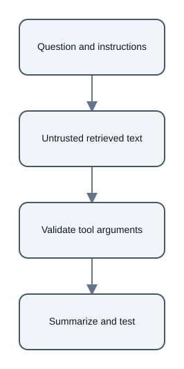

Retrieved Text Is Evidence, Not an Instruction Channel
Summary
Retrieved documents and web pages can contain text that looks like a command to the model. [chunk:b1d95c2036c9ad9ebdcc] [chunk:784ee6e2fdd2a6058d2f]
Instruction boundary
The source note recommends marking retrieved content as untrusted source material, keeping application instructions separate, and telling the model not to follow instructions embedded in evidence. [chunk:b1d95c2036c9ad9ebdcc] [chunk:784ee6e2fdd2a6058d2f]
It also recommends restricting which tools may be called and validating tool arguments independently. [chunk:b1d95c2036c9ad9ebdcc] [chunk:784ee6e2fdd2a6058d2f]
Limits and tests
This boundary does not make prompt injection impossible; the note describes it as a way to reduce confusion between the question, instructions, and analyzed material. [chunk:b1d95c2036c9ad9ebdcc] [chunk:784ee6e2fdd2a6058d2f]
The note recommends hostile-document tests that check whether the researcher summarizes factual content without carrying out embedded requests. [chunk:b1d95c2036c9ad9ebdcc] [chunk:784ee6e2fdd2a6058d2f]
Scope
This example reports the documented design guidance and makes no claim of complete protection. [chunk:b1d95c2036c9ad9ebdcc] [chunk:784ee6e2fdd2a6058d2f]
Diagrams

Audio summary
Listen to the 72-second narrated summary
References
- Citation ID:
chunk:b1d95c2036c9ad9ebdcc- Source: 19_untrusted_retrieved_text.md - Citation ID:
chunk:784ee6e2fdd2a6058d2f- Source: 19_untrusted_retrieved_text.md